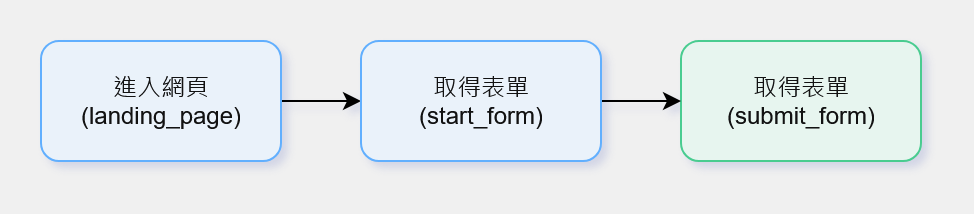
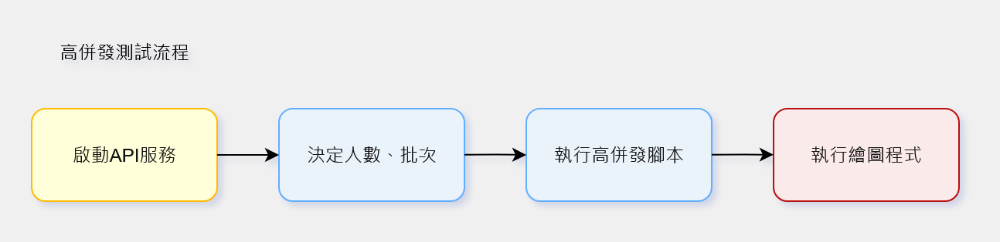
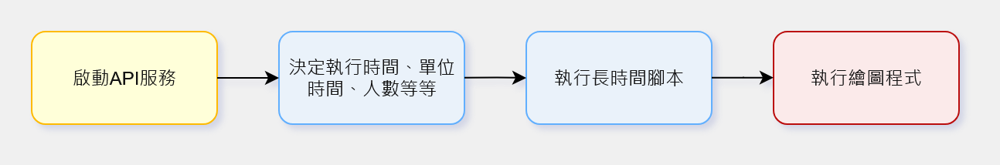
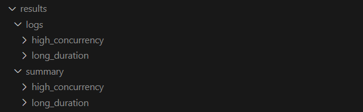
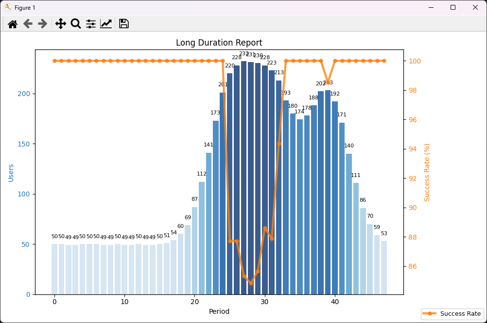
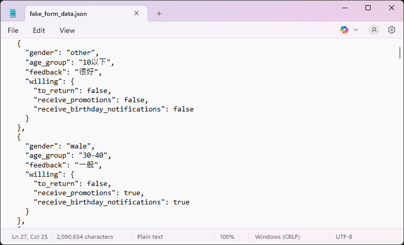

API Stress Test Demo - API壓力測試測試工具
API Stress Test Demo - API壓力測試測試工具
背景與動機
在開發與維運 API 時，我們經常需要測試其在高併發或長時間運行下的穩定性。本專案提供一個簡單易用的工具，降低人工測試成本，快速回饋系統性能。

工具組成與特色
核心測試模組
- 支援高併發模擬與長時間測試。
- 參數化設計，可調整使用者數量、測試時間、單位時間等。
- 模組化程式架構，方便擴展不同 API 測試腳本。


API 設計
- 採用模組化結構，每個 API 測試腳本以獨立函式存在，可由主控制模組動態呼叫。
- 測試函式支援以 lambda 傳入參數，靈活組合不同場景，例如：
(‘submit_form’, lambda: submit_form({**data, ‘current_users’: total_users})) - 以統一接口格式傳遞請求與結果，避免各 API 間的結構不一致。
- 流程設計包含：
- 進入網頁（GET）
- 取得表單資料（GET）
- 提交表單（POST）
- 支援基本的負載模擬，可依參數設定人數上限，模擬真實環境的請求行為。
【補】Log 管理
- 以 logging 模組集中管理所有測試日誌。
- 採用雙層 Log 機制：
- Console log：即時顯示測試進度與警示。
- File log：完整記錄測試細節與結果。
- Log 格式包含時間戳記、API 名稱、狀態與延遲時間，方便日後比對。
- 自動生成每日 log 檔案，命名格式如：
logs/2025-10-07_api_stress.log - 並區分不同測試模式（高併發 / 長時間），各自擁有獨立資料夾與流水號，方便版本追蹤。
- 若測試異常中斷，仍可根據 log 恢復測試結果統計。

高併發與長時間設計
-
使用 ThreadPoolExecutor 實現高併發控制，確保效能與穩定性。
-
採用參數化時間模擬長期壓力，例如：
test_total_time: 1200
test_unit_time: 48
unit_users: 100 -
每個時間單位會根據使用者數量調整請求速率，模擬真實流量變動。
-
成功率會依照「人數」與「衰減率」動態計算：
prob = max(low, high - decay * users) -
支援長時間測試（數小時以上），可觀察 API 的穩定性趨勢與性能衰減。
-
可視化報表顯示：
- 單位時間的成功率
- 成功率變化趨勢
- 高併發 vs 長時間的差異比較
-
高併發測試圖表

-
高併發測試圖表 
假資料生成
- 提供測試所需的假資料，模擬真實使用情境。
- 可快速生成多筆資料，支援所需要的測試場景。 
結果與報告
- 自動生成測試報告與日誌，便於結果分析
- 提供圖表與文字摘要，顯示人數和 API 成功率
- 結果可視化，方便觀察長時間或高併發下的性能波動
使用方式（使用者面向）
- 配置測試參數，例如使用者數量、總測試時間。
- 選擇測試腳本並執行。
- 查看自動生成的報告，分析 API 表現。
開發者面向【補】
- 模組化設計：新增測試模組不影響現有功能。
- 易於維護與擴展。
- 集中測試重點在 API 成功率與延遲，避免測試環境數據混亂影響判斷。

設計決策與判斷理由
- 使用 Python 與 ThreadPoolExecutor 支援高併發，便於維護。
- 長時間測試以模擬實際流量波動。
- 模組化與參數化設計確保靈活度與擴展性。
實務價值
- 提升測試效率，降低人工操作與分析成本。
- 快速回饋開發團隊，降低迭代風險。
- 展示 QA 與測試工具設計能力。
- 高可擴展性，未來可整合更多自動化流程。
後續方向
- 擴展更多測試腳本與報告功能，例如分配不同API行為的權重，模擬不同使用者的行為。
- 優化結果視覺化與使用者操作流程，例如新增GUI介面。
- 支援更多 API 類型與不同測試場景。